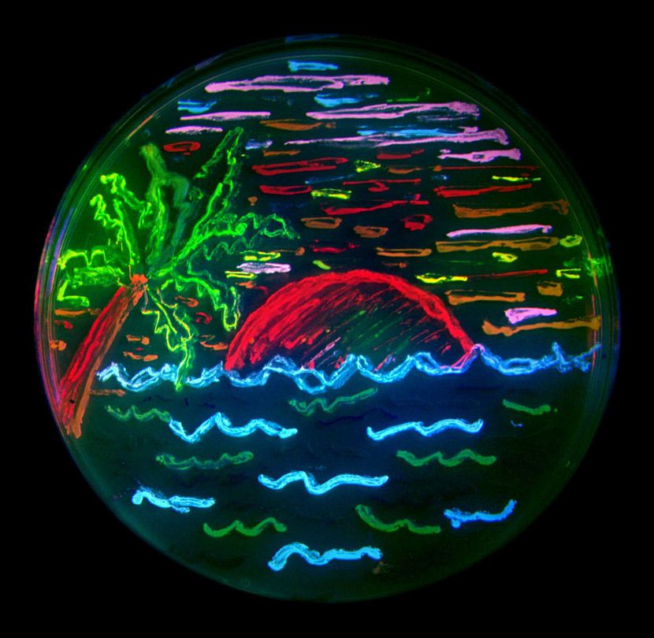
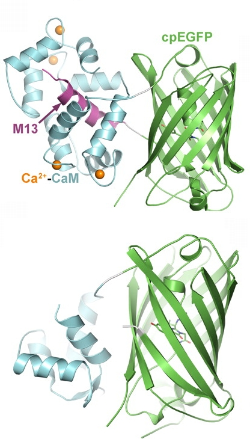
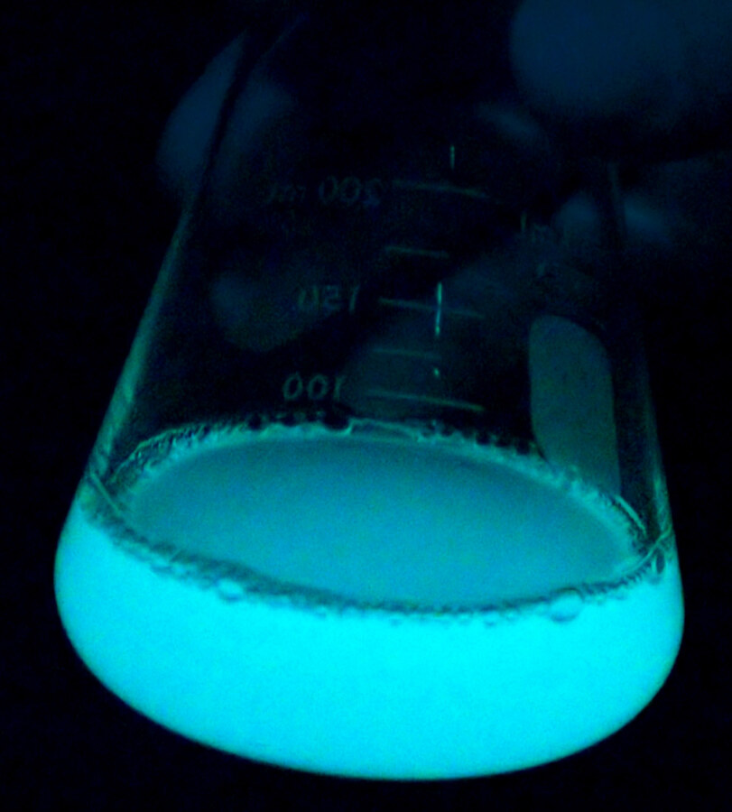
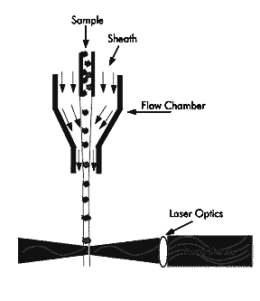
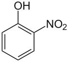

Fluorescent Reporter Assays





Images via Wikimedia Commons: FP beach, N. Shaner (Tsien lab), CC BY-SA 3.0; GCaMP, Akerboom et al., CC BY 4.0; luminous bacteria, Bathyctena, CC BY-SA 4.0.
Though there are additional ways of making a cell fluorescent such as using caged fluorophores and enzymes that deprotect them, the most common way of making a cell fluoresce is to express a gene encoding a fluorescent protein. There are a small number of ancestral fluorescent protein genes that have been isolated from jellyfish and other marine organisms. However, they have been extensively mutated to create additional genes with altered properties. There are many variants of GFP and RFP today with different spectral properties. For example, YFP is a mutant of GFP that emits yellow light instead of green. Also, there are mutants that fluoresce only in the presence of calcium ions. This is only the tip of the iceberg of fluorescent proteins that exist now, but the main point is that these can be expressed in many types of cells and can fluoresce at wavelengths that the cells do not normally generate. Thus, these signals can be readily quantified on intact cells using various fluorescence measurements. Four ways to make a cell glow, each with a picture. Express a fluorescent protein: a petri dish painted as a beach scene in bacterial colonies glowing eight colours. Express a sensor: the structure of GCaMP, a GFP that glows brighter when calcium binds, shown with and without calcium. Express an enzyme and add a caged dye: the structure of a fluorogenic galactoside, which fluoresces once the enzyme cuts off its sugar. Express a luciferase: a flask of bacteria glowing in the dark, light made without any excitation lamp.





| Fluorescence | 0.86 | 0.42 |
| OD_600 | 0.44 | 0.22 |
| Ratio | 2.0 | 1.9 |